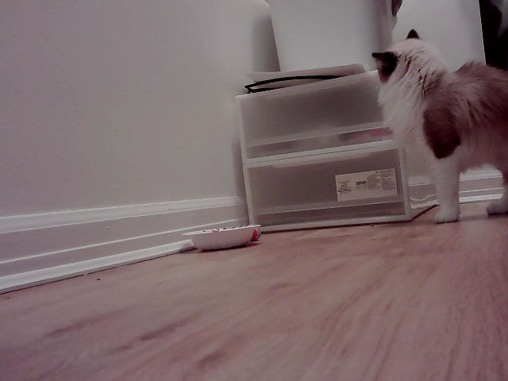
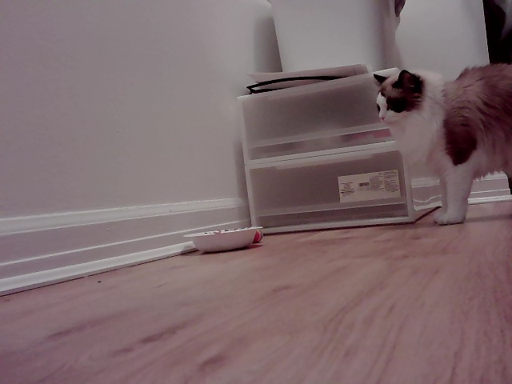
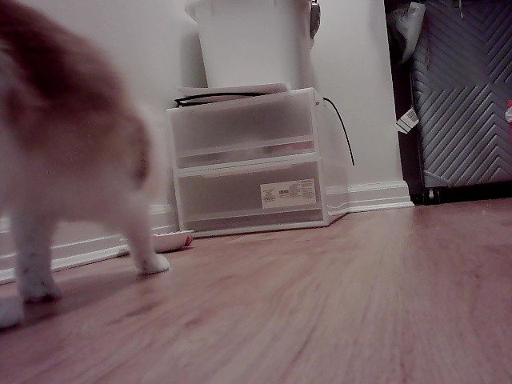

Sleep bot for pet
2026-11-01 · Watched 20:27 to 20:55, handed over at 20:27 with an OK sign. 24 of 31 changes had your pet in view.
Visits to the bowls
- 20:32-20:35 (3 min)
- 20:53-20:55 (2 min)
What your pet might have said
[20:32] "I'm so hungry right now!"
[20:53] "It's been a long wait!"
A guess by Qwen (qwen3.5:0.8b). YOLO only sees where the pet is, not what it does.
Time-lapse
Snapshots



The log
Moments with your pet in view
20:32:14 nobody; 1 cat(s) at right/close 20:32:51 nobody; 1 cat(s) at right/far 20:33:48 nobody; 1 cat(s) at right/far 20:33:53 nobody; 1 dog(s) at right/far 20:33:58 nobody; 1 dog(s) at right/far; also refrigerator 20:34:03 nobody; 1 dog(s) at right/far 20:34:09 nobody; 1 cat(s) at right/far 20:34:14 nobody; 1 cat(s) at right/far; 1 dog(s) at right/far 20:34:19 nobody; 1 dog(s) at right/far 20:34:24 nobody; 1 cat(s) at right/far 20:34:40 nobody; 1 dog(s) at right/far 20:35:01 nobody; 1 cat(s) at right/far; also refrigerator 20:35:06 nobody; 1 cat(s) at right/far 20:53:07 nobody; 1 cat(s) at left/close 20:53:12 nobody; 1 cat(s) at right/far 20:53:17 nobody; 1 cat(s) at right/far; 1 dog(s) at right/far 20:53:28 nobody; 1 cat(s) at right/far 20:53:54 nobody; 1 dog(s) at right/far 20:54:04 nobody; 1 cat(s) at right/far; 1 dog(s) at right/far 20:54:10 nobody; 1 cat(s) at right/far 20:54:20 nobody; 1 cat(s) at right/far; 1 dog(s) at right/far 20:54:25 nobody; 1 dog(s) at right/far 20:54:30 nobody; 1 cat(s) at right/far; 1 dog(s) at right/far 20:54:36 nobody; 1 cat(s) at right/far